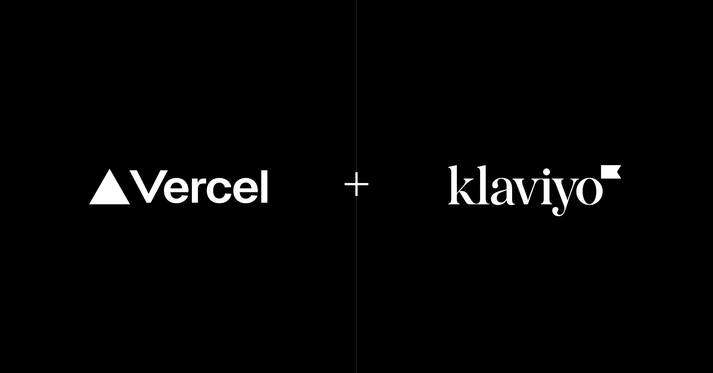

Carlos José Villanueva Ramos
📅 September 26, 2026
🛠️ Guardrails instead of walls: How Klaviyo shipped 356 internal apps in two weeks on Vercel

Empowering non-technical teams to build software without sacrificing security is one of the toughest challenges for modern enterprises. Klaviyo tackled this by building a dedicated internal platform on Vercel, opening up a citizen developer program that allowed employees to deploy hundreds of functional applications in record time.
In just the first two weeks, 512 builders deployed 356 live apps — including full-stack applications connected directly to corporate databases — with teams ranging from legal to marketing shipping software seamlessly.
Engineering guardrails instead of walls
Rather than restricting what employees can do, Klaviyo engineered built-in protections across the entire infrastructure stack:
Secure Compute and Identity: Vercel Secure Compute establishes a private network path into Klaviyo's infrastructure, allowing apps to read and write to databases without touching the public internet.
Automated security defaults: Every application is private and SSO-gated through Okta via Vercel Passport, while inheriting hardened GitHub security settings and project scanning via Wiz.
Rapid idea-to-app pipelines: Through K:Forge, an in-house pipeline built on the Vercel SDK, employees can transform an idea from Slack, Claude, or Cursor into a live, deployed app in under three minutes.
My take: this approach proves that security and high-velocity innovation can coexist. By letting Vercel handle infrastructure scaling, CDNs, and preview environments, Klaviyo turned their platform team from a development bottleneck into a seamless finishing touch.
Source: Susan Aziz, Kevin Sundstrom
Carlos José Villanueva Ramos
📅 September 26, 2026
💬 Closer to your thumb: Google Messages rolls out redesigned long-press menu to stable users
As smartphone screens continue to grow larger, reaching the top of the display for basic interactions has become an ergonomic annoyance. Addressing this usability hurdle, Google is widely rolling out its redesigned long-press menu to stable users of Google Messages.
After months of limited availability in beta testing phases, the upgrade is now reaching general users across a broader range of devices, moving core message actions closer to the user's natural thumb placement.
Redesigned ergonomics and selective copying
The updated interface introduces practical quality-of-life improvements that streamline daily messaging:
Floating action list: Long-pressing a message now triggers a floating menu positioned right next to the selected bubble, replacing the old toolbar at the very top of the screen.
Easier navigation: Frequently used actions such as Reply, Forward, Copy, Star, Delete, and Info can be accessed instantly without stretching your hand.
Selective text copying: Users can now drag selection handles to copy specific sentences, addresses, or codes instead of being forced to copy an entire message block.
My take: it is great to see Google focusing on these thoughtful ergonomics. Small UI tweaks that eliminate awkward stretching make a massive difference in everyday mobile communication.
Source: Hillary Keverenge, Android Authority
Carlos José Villanueva Ramos
📅 September 25, 2026
🛠️ Build your way: Use any AI coding agent you prefer in Android Studio

AI engineering tools have become essential productivity multipliers, but every developer and team has their preferred coding assistant. Recognizing this, Android Studio is taking a massive leap forward by introducing "Bring Your Own Agent" (BYOA).
With this new feature, you can seamlessly integrate your favorite coding agent — such as Anthropic's Claude Agent, OpenAI's Codex, or Google Antigravity — directly into Android Studio, supercharging it with the IDE's optimized AI infrastructure.
Your agents, your AI plan
BYOA combines your preferred agent with native IDE intelligence via the Agent Client Protocol (ACP). This unlocks critical engineering advantages:
Source code awareness and token efficiency: Android Studio provides the complete project graph, build configurations, and platform details directly to your agent so it filters only what is relevant, reducing latency and token costs.
Native tool injection: We connect build diagnostics, Jetpack Compose previews, Android SDK tools, and emulator controls straight to your agent so it can test, diagnose, and execute right inside the environment.
Seamless flexibility: Connect any ACP-compatible agent, log in with your consumer or enterprise plan, and swap agents effortlessly if one runs out of quota or performance expectations.
For developers in the Google ecosystem, the recommended "Google Antigravity" agent provides access to top-tier models like Gemini Flash alongside expanded usage quotas using standard Google accounts or AI Pro/Ultra plans.
My take: this openness proves that AI-assisted mobile development has fully matured. Instead of locking developers into a single proprietary IDE assistant, the future belongs to open architectures where you choose the brain and let the native environment handle the heavy lifting.
Source: Matthew Warner, Product Manager, Android Developer Experience
Carlos José Villanueva Ramos
📅 25 September 2026
🤖 Stop paying the build_runner tax: Why I refuse to use Mockito in modern Dart

Anyone who has practiced test-driven development (TDD) in Flutter knows the familiar friction: you add a new method to a service interface, head back to your test file, and see red squiggly lines everywhere because the generated mock doesn't recognize it yet.
You sigh, open your terminal, and run the dreaded command: dart run build_runner build --delete-conflicting-outputs. Then you wait fifteen seconds, thirty seconds, or even two minutes in a large enterprise codebase, completely derailing your train of thought.
This happens because null safety forced classic Mockito to abandon runtime reflection and shift to compile-time code generation, introducing three major bottlenecks: the iteration tax that destroys TDD flow, Git diff contamination with thousands of lines of boilerplate code, and fragile annotation coupling.
Enter Mocktail: Runtime mocking without configuration
Created by Felix Angelov, Mocktail provides the exact same intuitive API as Mockito but with zero code generation, zero .mocks.dart files, and zero annotations. By leveraging Dart's implicit interfaces and wrapping invocations in closures like () => mock.getUser(), it safely defers execution.
The only minor trade-off is registering fallback values for custom non-nullable types using registerFallbackValue in your setup, which takes literally two lines of code.
My take: what I love about this shift is how it gives TDD its velocity back. Waiting on build_runner just to verify a simple method call is a waste of mental energy. Migrating gradually to Mocktail removes a historical bottleneck that should have stayed in 2020.
Source: Randal L. Schwartz for Google Developer Experts